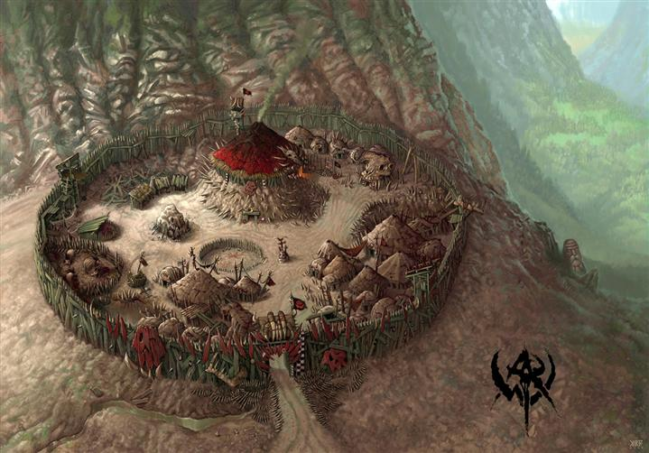

back
Stronghold Bartark

Stronghold Bartark is a new arrival to the landscape of Northern Fandor, it is only in the last 15 years that the Stronghold came to be and now it has been in an endless war with the local human population. The Orc that resides there are constantly pillaging the nearby farms and village and they engage in weekly combat against the Kingdom of Fandor. It is not known who leads these Orc or where they come from exactly, but approach this location with caution.